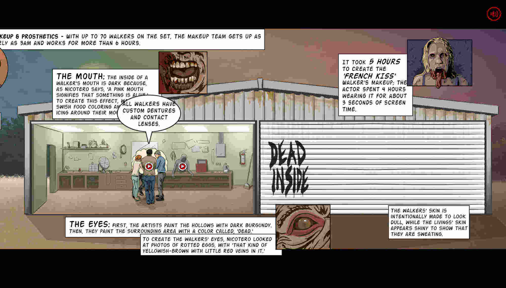
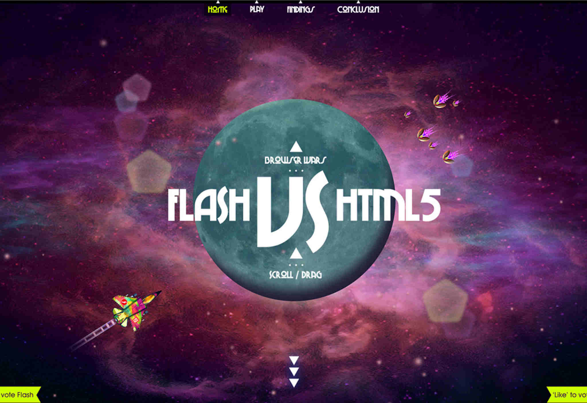

Much like fashion trends, web design also goes through its own phases and cycles. A trend or technique that is hot today might fall out of favor tomorrow, whereas something that was once considered ridiculous might just come back into vogue once again. Take animated GIFs: they were a cool thing back in the 1990s, then fell out of favor in the previous decade, and are nowadays once again popular (albeit this time they owe their existence to memes and social media comments or emojis).
One design trend that’s currently on the rise is parallax scrolling. Increasingly, more designers are using parallax as a key feature of their designs and themes. While it does have its own share of awesomeness, parallax is not meant for every website. In other words, parallax scrolling might be many things, but it surely is not a silver bullet that fixes everything.
So, what exactly is parallax scrolling???
While it’s true that Parallax has found love among web designers in recent times, the concept and logic behind it is pretty old. Basically, parallax means that elements are allowed to move independently, thereby giving a 3D feel to an otherwise 2D plane.A great example of parallax scrolling is The Walking Dead!
Why use Parallax?
Speaking entirely in terms of animation and not just design, parallax can be implemented in various ways:
(1) Raster Parallax, which is mostly used to give an optical illusion of movement.
(2) Repeat Pattern, that uses scrolling displays over a repeated background.
(3) Layered Parallax, where the foreground and background objects move at a different pace.
That said, parallax scrolling is nowadays used in a wide variety of websites, including portfolios, corporate sites, landing pages, and so on.
However, there are certain considerations that you must bear in mind when using parallax in your web pages…
The Loading Time
People on the internet have short attention span and limited time. If your website fails to load fast, it will lose visitors, no matter how well designed it may be. Generally speaking, most designers that work with parallax use it for its aesthetic and eye candy element. In other words, parallax is not well known for its speed, and this means that no matter how you implement it, you are sacrificing a little bit of your page load times.
The Usability Factor
There is, of course, a thin genre of websites where parallax can enhance and improve usability (portfolio websites and landing pages, for example). You can have parallax scrolling on your website if the website is just a showcase of who you are and how your users can contact you.
Parallax scrolling works well only if your website requires one-time visits. If you’re expecting repeat visitors, or looking to convert visitors into customers, parallax scrolling will not look impressive, nor will it help you gain more visitors.
After the first visit, the animation effects look more annoying that amazing. Thus, if you are pushing an idea on a web page, you can use parallax scrolling, but if you are pitching for a product or a business, parallax scrolling can do more harm than good.
One website that uses parallax to its full efficiency and does not sacrifice usability is Flash VS HTML It is fast, efficient and unique.
The Issue of SEO
In general, on-site SEO schema follows a specific pattern. You can follow a definite SEO architecture with parallax websites, but the biggest and most visible drawback in this case is the fact that parallax scrolling is not the best fit for mobile devices. Considering that more and more search engines are now keeping mobile users’ requirements in mind, you need to be prepared for the same.
Parallax scrolling, much like any other design trend, is not bad in itself. However, the fact that it is being overused and misused is making it more harmful than beneficial. Please use it wisely!
Other examples:
Example 1
Example 2